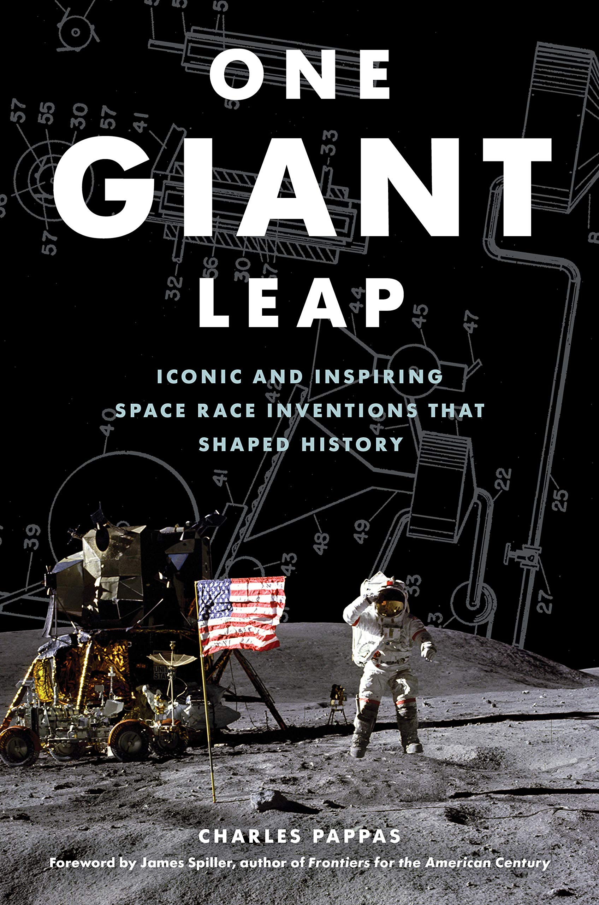
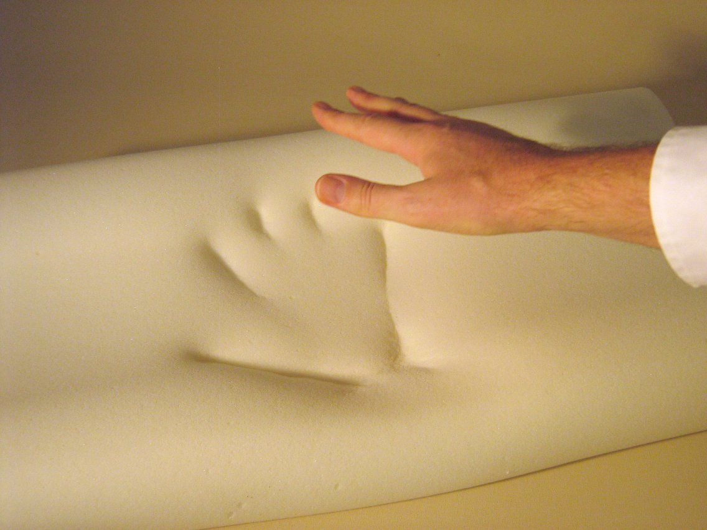
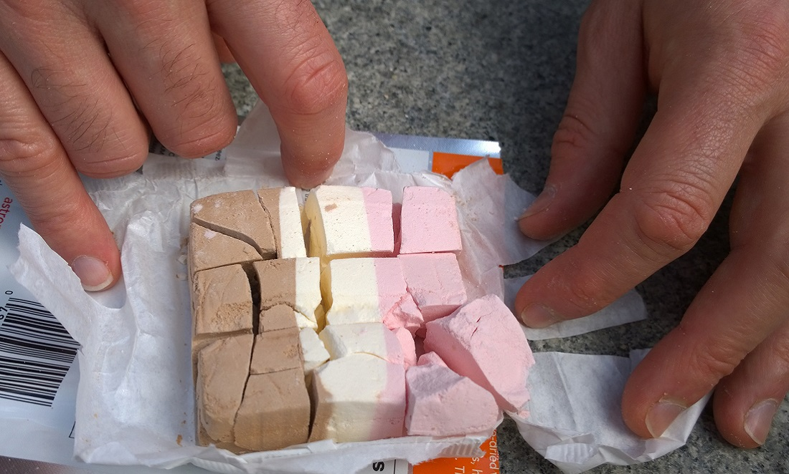
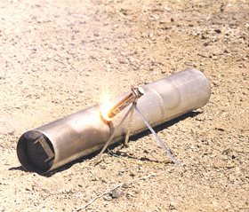
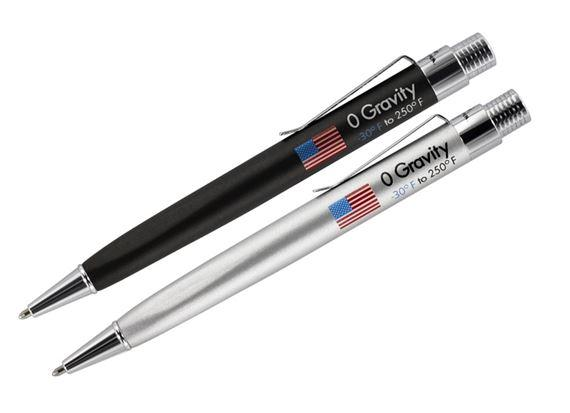
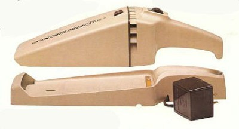
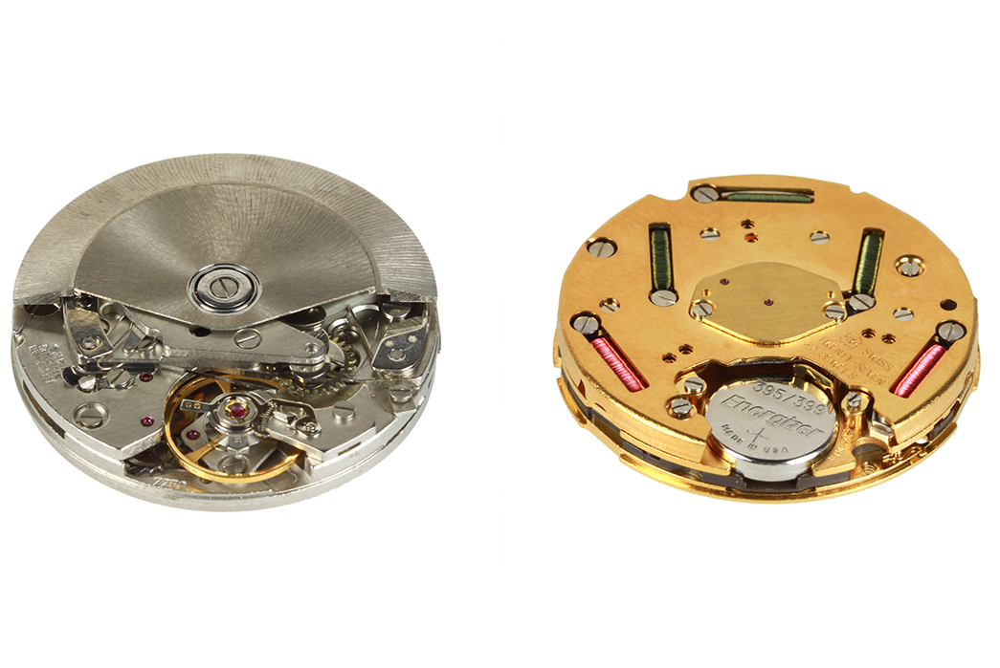

This informational novel gives insight into how the space race greatly improved society's technology, and how many incredible inventions came to be.
From the use of trashed rocket fuel, to harnessing crystal vibrations, came many new inventions that redefined the world how it used to be. Many people think the massive budget that goes to NASA is wasted, I mean, which of us are going to the moon any time soon. But with all of that budget comes a lot of research and engineering which has lead to things we use every day.
Everyone has heard of it, memory foam. It is a type of foam that softens with heat and conforms to your body. But the reason this was invented by NASA was because they were looking to improve seat quality for pilots and passengers, allowing them to sit for longer in comfort. They were also looking to create a good impact resistant foam, and as a result from both of those goals came memory foam.
AKA freeze dried food, space food has a shelf life of practically forever. This is the kind of thing that really helped progress towards longer missions away from earth. While regular food will spoil, this moistureless freeze dried food can last 25-30 years! More wasy of preserving food have come out since this was discovered, but freeze drying food is still around today. Freeze drying some fruits results in a tasty and healthy snack.
Yes, land mines are a big problem, and this was a big fix for the problem. Today there are still many thousands of deaths from land mines every year. This invention was NASA's idea and some other companies end product. The invention used NASA's old trash solid fuel to create a small explosion, taking the land mine along with it. They put some of the fuel on the end of a flare that you place next to an uncovered mine, then set off the flare from a safe distance
What in the world is a space pen. Space pens are pens that work in zero gravity. A standard ball point pen works with the help of gravity to constantly coat the ball point of a pen in ink. But when you are in space there is no gravity at all to help push the ink out of a regular ball point pen.
Corless devices are almost everywhere you look, and you can partially blame nasa for that. First of all, NASA was looking for a way to use powertools all around the inside and outside of the spaceship while in space. For that to work the way they wanted, they needed a way to use powertools completely untethered or wireless. And that is when NASA worked with the help of BLACK+DECKER to create cordless power tools.
Now the most prevelant watch today, quartz watch's work off of the consistant oscillation that it produces when electricity is sent throught it. Watches used to work using springs that were wound up. The problem with those were that they would become inaccurate over time, which is the last thing you want when timing a space mission.
Their goal was to get the first man on the moon. And in order to get the first man on the moon, innovation was certainly needed. They had to keep the astronauts equipped for however long their trip would last. One necessary thing was making sure food doesn't go bad; and the solution was freeze dried food. Another essential thing when sending astronauts to the moon is the use if accurate time pieces. Without the invention of the quartz watches their old watches could have gone off time and made them have critical issues.
One Giant Leap is bringing the secrets of NASA's science and engineering to you in book form. You learn about how they came up with inventions that transcended time and that are still around today. Then learn about every detail and all the hard work it took to produce these things from scratch. Order now.
This novel will provide you with all of the amazing facts you never knew about when it comes to NASA. How they did it, what they did, how they fixed disasters, and more. Read about all of the iterations of trial and error it took before they knew they were ready to land a man on the moon. Order now.
One Giant Leap stays true to its title, and tells you all about how the journey to the moon lead to "ONE GIANT LEAP" in technology. Overall, I would reccomend this book if you're interested at all in technology, engineering, or space. Something I liked about the book was that each chapter focused on one seperate part of the end result. For example one chapter, "Writing High: Space Pens", shows the struggle of engineering a pen that works in zero gravity. And another chapter, "Crash-Proofing: Memory Foam", tells you everything about how the invention of memory foam came to be when there was a need for a material that could take very high impacts. On the other hand I didn't like how at some points the book dragged on the backstory to why a certain type of technology was needed.